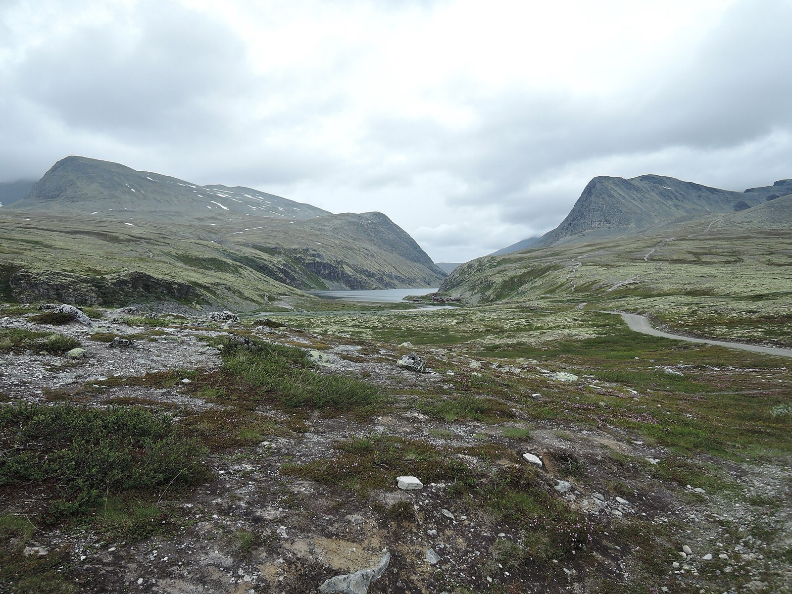
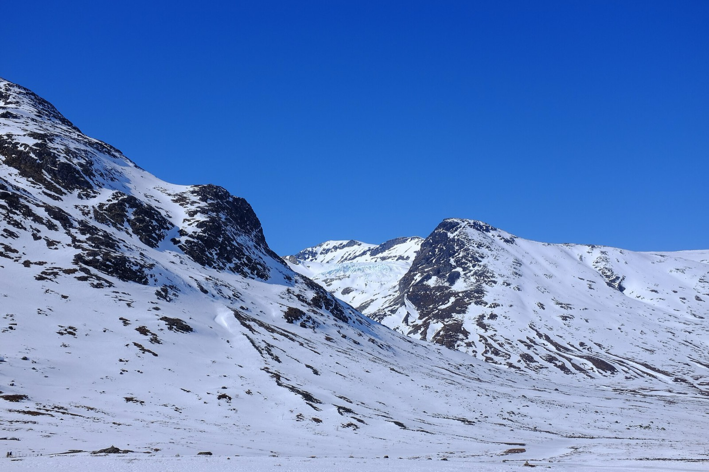
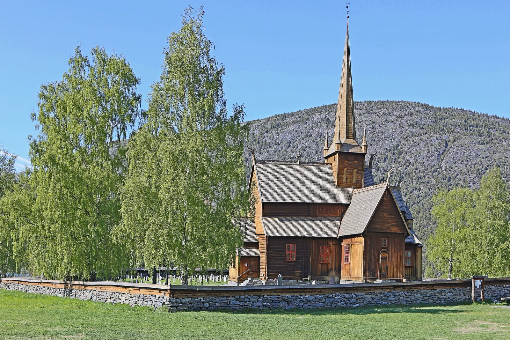

1Aug 7
Travel
Land in Oslo
Flights from the US usually land in the early evening. Collect the car, buy dry goods and a sim or data plan, and sleep in Oslo or near the airport. Keep it light.
 Photo: Ximonic, CC BY-SA 3.0
Photo: Ximonic, CC BY-SA 3.0
Two weeks by car from Oslo to Trondheim: day hikes from a handful of valley bases, a mountain road down to the fjords, and a few easy evenings on trout and grayling rivers.
Hut-to-hut takes you deep into a few high places. This plan goes the other way: it sleeps in the same bed for several nights, hikes the best day routes from there, and covers far more country between them: the Rondane plateau, Jotunheimen, a mountain pass down to the Sognefjord, the Geirangerfjord, the Trollstigen road and the Dovre mountains, ending in Trondheim.
You carry a day pack, not a kit. You choose the hike each morning from the forecast, and a wet day is a drive and a bakery instead of a problem. The trade-off is that the high interior (the plateau between huts) is out of reach, and a car trip in August shares the famous roads with a lot of other cars.
Dates are Aug 7–20, 2027 (planned in Nov 2026): land in Oslo on Aug 7, fly home from Trondheim on Aug 20. Two travellers, comfortable with 6–8 hour hike days. Everything marked VERIFY came from memory or thin sources. Drive times especially are rough and should be checked in a mapping app.
The shape: Oslo → Østerdalen → Rondane → Lom (five nights) → Geiranger → Åndalsnes → Dovre → Trondheim. Lom is the anchor: from one bed you can reach Besseggen, the Spiterstulen valley, the Sognefjellsvegen pass and two rivers. Fishing is three short sessions on easy evenings.
Pins are place locations, and the lines are straight connections between them, not real roads. Click the map to enable scroll zoom. Without JavaScript, the day-by-day list below has everything.
Red is a hiking day, blue a fishing day, grey travel. Tap a day to jump to it.
Flights from the US usually land in the early evening. Collect the car, buy dry goods and a sim or data plan, and sleep in Oslo or near the airport. Keep it light.
If you want a taste of the city, spend the morning at Frogner Park and the Vigeland sculptures, then drive about three hours north into Østerdalen and sleep near Rena. An optional evening on the Glomma with a day licence (fiskekort) from inatur.no. Check the minimum size on your ticket.
Drive to the Rondane trailhead and walk to the lake Rondvatnet and the staffed hut Rondvassbu, then continue as far as the day allows. Rondeslottet (2,178 m) is a long day; the valley walk alone is lovely. Check the current trailhead, toll road and boat arrangements on ut.no VERIFY. Sleep in Otta or the Sel valley.

A slow morning with laundry and a big breakfast. An easy session on the Lågen/Otta confluence area on an inatur ticket, brown trout and grayling both present, then drive up the Ottadalen valley to Lom (about an hour and a half VERIFY). This is your base for the next five nights.

The famous ridge between the green Lake Gjende and the blue Bessvatnet. Drive to Gjendesheim (roughly an hour and a half from Lom VERIFY), take the lake boat to Memurubu and walk the ridge back. This way you are not tied to a return boat. Allow 6–8 hours and start early. The Gjende boat operator opens 2027 bookings on December 1, 2026, per gjende.no; book ahead in August.

Drive to Spiterstulen, the base for Galdhøpiggen (2,469 m, Norway's highest). The normal summit route crosses a glacier, and most people do it roped with a guide, so unless you have glacier experience and gear, skip the summit. Instead walk up the Visdalen valley for the scenery without the ice VERIFY.

Lom has a stave church, a bakery and an outdoor shop. Evening session on the Bøvra or the Otta river at Lom. This is your weather buffer: swap a hike day here if Besseggen or Spiterstulen were clouded out.

Drive the high mountain road (road 55) over the Sognefjell pass to the Sognefjord and back, about two hours each way VERIFY. It climbs above the treeline past glaciers and lakes. Stop for the views, lunch by the fjord and the Urnes stave church (a ferry crossing) if time allows. The road is seasonal, so check it is open before you go VERIFY.

Over the mountains via the Strynefjell road to the Geirangerfjord, roughly two to three hours VERIFY. Walk to a viewpoint above the fjord, take the sightseeing boat or rent a kayak, and see the waterfalls from the water. Geiranger is the busiest stop on the trip in August, with cruise ships in the fjord, so book a room early and aim to be out before the buses.
A short ferry out of the fjord valley, then over the Trollstigen road, with its eleven hairpins, down to Åndalsnes. It normally opens in the spring and runs until autumn, but it can close at short notice in heavy rain or rockfall VERIFY. Narrow and slow; don't drive it tired.

The classic here is the Romsdalseggen ridge, a long and exposed day, so it needs clear weather VERIFY. A shorter walk to a viewpoint above Åndalsnes is the safer pick if the cloud is low. Second night in Åndalsnes.
Drive back east through Dombås (about two and a half hours VERIFY) and into Dovrefjell National Park. A short walk from the Hjerkinn side leads to a pavilion with a view of the Snøhetta massif and the wild reindeer country; musk oxen live in the area but tours to see them are guided, so only go if you want to VERIFY. Sleep in Dovre or Oppdal.

Drive to Trondheim (about two and a half to three hours VERIFY). Return the car, then spend the afternoon at Nidaros Cathedral and in Bakklandet, the old wooden quarter by the river. Sleep in Trondheim: home flights leave early.

Dry the waders. Disinfect or fully dry the fishing gear before you leave (see Fishing).
Days 4, 7 and 11 are your flex days. Besseggen, Spiterstulen and the Romsdal ridge all need clear weather; the passes and the fjords are better in cloud than the peaks. Check yr.no the night before and again at breakfast.
| Variant | What changes | Trade-off |
|---|---|---|
| Oslo round trip | Skip the north: after Lom and Sognefjellsvegen, drive back to Oslo through Valdres (about 5–6 hours VERIFY) and fish the Begna. | Simpler flights and no one-way car fee, but you lose Geiranger, Trollstigen and Trondheim. |
| Add the huts | Swap days 3 and 5–7 for a hut chain in Jotunheimen. See the hut version. | More depth in the high country, fewer fjords and a lot more booking. |
| Slower | Drop Geiranger or Åndalsnes and spend the days at Lom or Dovre. | Less ground and less driving. |
Thirteen nights, six bases. Lom carries the middle of the trip. Book the small, popular places first: the Lom, Geiranger and Åndalsnes rooms go early in summer. Self-catering cabins with a kitchen make the vegetarian question easy.
| Nights | Base | Why |
|---|---|---|
| Aug 7 | Oslo or near the airport | Landing evening, car pick-up. |
| Aug 8 | Rena (Østerdalen) | Glomma evening, an easy drive to Rondane. |
| Aug 9 | Otta or the Sel valley | After the Rondane day hike. |
| Aug 10–14 | Lom (5 nights) | Besseggen, Spiterstulen, Sognefjellsvegen, two rivers, a bakery. |
| Aug 15 | Geiranger | The fjord. Book early. |
| Aug 16–17 | Åndalsnes (2 nights) | Trollstigen and a hike day. |
| Aug 18 | Dovre or Oppdal | Dovrefjell, then an easy morning to Trondheim. |
| Aug 19 | Trondheim | Early flight home. |
Three short sessions, not a fishing trip. Brown trout (ørret) and grayling (harr) rise to a dry fly in the valley rivers, best in the evening. August water is low and clear, so go light on the tippet.

This is the easy version. You are never relying on a single fixed hut dinner: every base has a supermarket (Coop, Rema 1000 and Kiwi are everywhere) and most have a café or restaurant. Self-catering cabins with a kitchen make it simpler still.
One morning on day 2, and any time left on day 1. Tips passed on by a friend of a friend, not checked by us: Frogner Park and the Vigeland sculptures, the Munch Museum, the Kon-Tiki Museum, Grünerløkka for wandering, Vippa for a drink and a bite, and Åpent Bakeri for pastries. Check opening hours and menus before you plan around any of them.
The afternoon of day 13. Nidaros Cathedral, and Bakklandet, the old wooden quarter on the east bank of the river, with cafés and a bike lift VERIFY. It is a pleasant place to hand the car back and have a calm last evening.
Norway's allemannsretten lets you walk on uncultivated land, but keep well away from houses, close gates and take your rubbish with you. Fishing is not covered by it: you still need a licence.
| When | Do |
|---|---|
| Nov 2026 (now) | Settle the route. Check passports. |
| Dec 1, 2026 | The Gjende boat opens 2027 bookings, per its operator. Book the Besseggen boat once the dates are fixed. |
| Winter 2026–27 | Book rooms for Lom, Geiranger and Åndalsnes first; they fill earliest. Book the car, including the Trondheim drop-off. |
| Spring 2027 | Book the other rooms. Check road opening dates and Trollstigen status. Replace or plan to disinfect fishing gear. |
| Late July to early August | Buy fishing licences, check river levels and the forecast, pack the lunch kit. |
This page was built from memory and a few light searches (road seasons and the Besseggen boat). It has no river-by-river reports and no confirmed 2027 prices. Treat it as a well-shaped draft, not a reservation.


.jpg){kind=link}